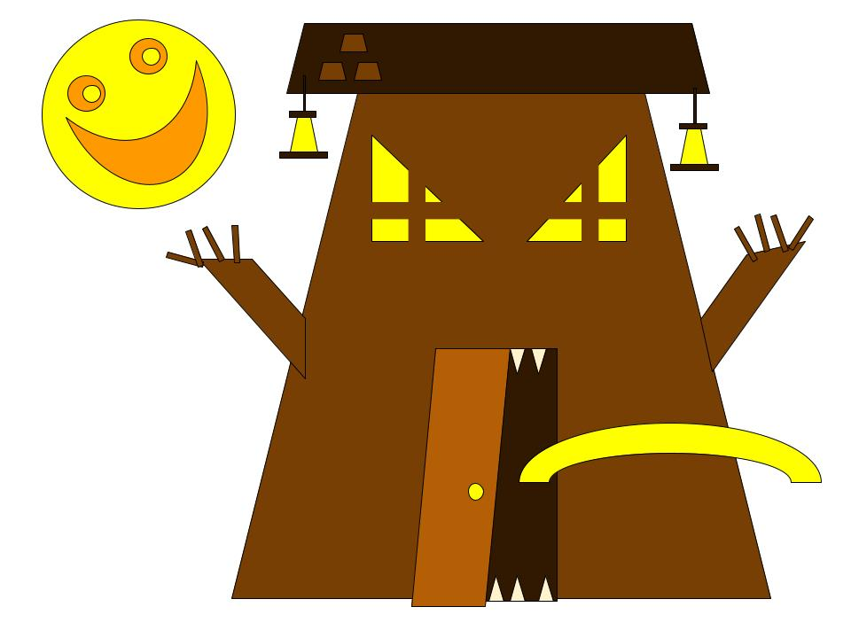
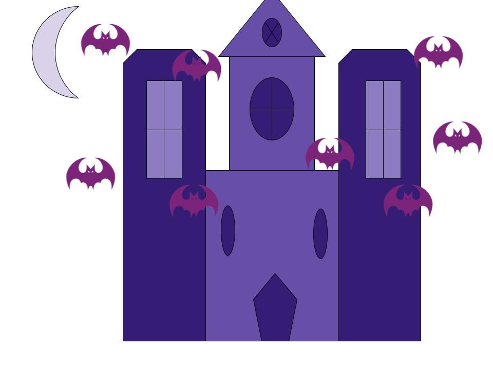
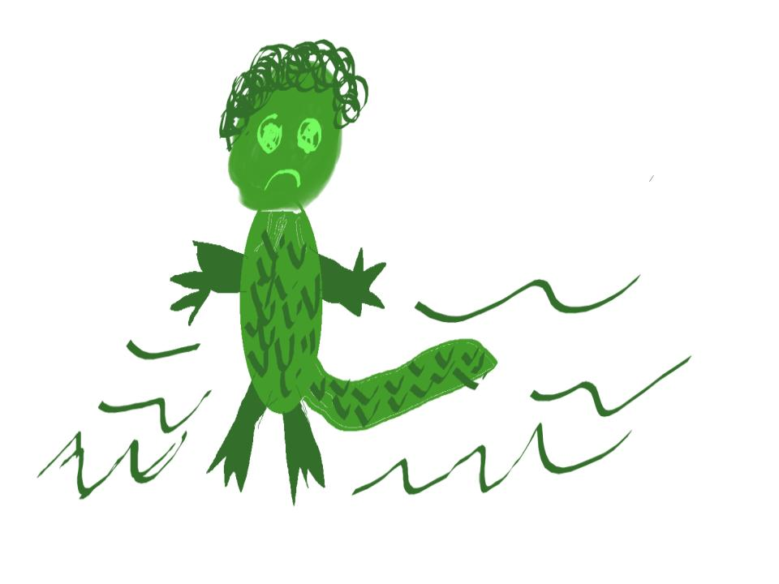

Let’s face it. These days, everyone could use a laugh. Fresh off my first semester as a TA at MSU, laughing at our pain was the very first thing I did on the very first day for each of my sections in IAH 207: “Things that go bump in the night.” I asked my students to share their names, their years, their majors, and one thing they’re afraid of. The fear could be silly, irrational, or substantive. And like I learned in the military, I led by example when I shared both my silly fear (Kangaroos. I had no idea they would lure prey into the water and drown them. That is legitimately terrifying and I’m never voluntarily going to Australia) and something more substantive (I’m deeply afraid of personal success because there have been too many moments in my life where happiness arrived only for something to ruin it before or after.) What followed across all three sections were moments where my students shared silly (spiders), odd (getting in a car crash and someone films it while an embarrassing song plays), and down right chilling (getting kidnapped) fears. By the time we finished sharing, my students were empathetic with each other, open to the course material, and had a reasonable idea of how my classroom operates.
My teaching runs on a ratio of two parts humor, one part content, one part digital tools, and one part metacognition and reflection. Humor is the largest single ingredient because it pulls double duty. Humor is both the delivery mechanism that makes rigorous content accessible across different identities and experiences while also serving as the environment-builder that creates the space where students can take intellectual risks. The other three ingredients are what makes the classroom work. Disciplinary content provides students with intellectual substance. Digital tools extend the learning environment and experience beyond the brick and mortar while also providing literacy in cutting edge technology. Last, and most importantly, metacognition and reflection ensures students are constantly aware of both how and why they know what they know.
The gap between enjoyment and analysis is where I do my best work.
To me, teaching has become this almost artful negotiation between understanding and tailoring content to an audience while also creating a physical and social environment with the most potential for learning to occur. I typically teach courses in popular culture, literature, speculative fiction, and other forms of generic content, things that students arrive already knowing and loving but rarely thinking critically about the effects it has on their personal development and society. English is what Neumann, Parry, and Becher call a “soft pure” discipline.1Ruth Neumann, Sharon Parry & Tony Becher, “Teaching and Learning in their Disciplinary Contexts: A Conceptual Analysis,” Studies in Higher Education 27, no. 4 (2002): 405–417. Soft pure fields are reiterative, holistic, and qualitative, where knowledge-building is a formative process and teaching activities are largely constructive and interpretive. It’s reiterative, holistic, and qualitative and the goal is not the accumulation of fixed information but the development of critical perspectives. My courses are therefore organized around three main learning goals. First, I want students to read semiotically across media forms and develop a toolkit to interpret how signs, symbols, color, sound, and narrative structure create meaning, whether the text is a film, novel, hip-hop album, or a comic book. Second, I want students to understand how identities such as race, gender, or geographically bound culture become a cycle of consumption and experience via cultural products. Third, I want students to be able to write analytically about those first two things with the metacognitive awareness to examine how they arrived at their ideological positions and what interplay of assumptions, facts, and experiences shaped them.
These goals are grounded in my conviction that the humanities teach a transferable mode of inquiry necessary to living an informed life. When my students learn to decode how Gothic horror uses specific color palettes and spatial aesthetics to produce feelings of dread, they are practicing the same interpretive skill set they will need to read a political advertisement, evaluate a news program, or recognize how a digital platform is structuring their attention. The content is only the vehicle that their analytical and reflective capacity allows them to steer.
Play first, analyze second.
For example, in my Gothic horror unit, after a short lecture on aesthetics, semiotics, and color theory, I divided students into color-coded teams and gave each group the following prompt. Design something spooky (i.e. a haunted house, a mysterious toy, a terrifying location, a spooky transportation vehicle) and build it in Google Drawings using the vocabulary we had just covered. One of the Orange teams built a haunted tree-house with a grinning moon in high-saturation yellow against dark brown. A Purple Team rendered an entire Gothic mansion in a monochromatic palette with bats and a crescent moon. And the Green Team. My dear sweet Green Team drew a swamp creature that had the entire room in tears because no one could figure out if the fifth appendage was a tail or…something else. Each group then presented their creation and its lore to the class.



Student group drawings from the Gothic horror unit, IAH 207. Each team applied semiotic and color theory vocabulary to design original spooky creations in Google Drawings.
After the applause and the roasting, I put the Gothic horror gender discussion on the screen: “Many Gothic horror stories feature female protagonists trapped in eerie, oppressive environments. How does Gothic horror reflect historical fears and anxieties about gender roles?” Now look at what you just built, I tell them. Who is trapped in your haunted house? Who is the victim in your story? While these questions also generated some humorous responses, we were also able to have a really productive and thought-provoking conversation about gender anxiety, body dysmorphia, and many other branching ideas. I’ve kept every drawing because they’ve become treasured artifacts of both my methods and of intellectual growth students made that semester.
Never name a tool without explaining what learning it enables.
The structure was the same for my Afrofuturism recitations during Fall of 2024. Early in the semester, after we’d built a shared vocabulary of Afrofuturism terms, I divided the class into three groups. Each group used a different generative AI platform and asked their assigned platform two questions. Can you outline an essay about the definition of Afrofuturism? Can you outline an essay describing Black speculative practice? Then each group answered four questions about what they received such as what information does it give you? What information does it leave out? How does it organize ideas? And what would be your “humanistic” revision? The students discovered that the AI outputs are competent but only reproduce surface-level definitions without any cultural specificity and they always organize information in the same logical sequence. The “humanistic revision” then forced students to evaluate and describe what humanistic inquiry contributes that computational and statistical pattern-matching can’t replicate. The goal of the assignment wasn’t to make students AI skeptics or AI enthusiasts but critical users who understand what these tools can and can’t do. Beyond this assignment, digital platforms extend the classroom’s atmosphere into the hours between sessions. Online discussion forums allow the energy of the room to continue after the fifty-minute class period. The general rule I follow is to never name a tool without explaining what learning it enables.
How do you know what you know?
My background in the military, Warrior-Scholar Project, and the writing center taught me the importance of reflecting on the intellectual journey that led to the formation of an argument or belief. David Kolb’s model of experiential learning—concrete experience, reflective observation, abstract conceptualization, active experimentation—offers the best conception of this process.2David A. Kolb, “Learning Styles and Disciplinary Differences,” in The Modern American College, ed. A. Chickering (San Francisco: Jossey-Bass, 1981), 232–255. Kolb’s cycle describes learning as a continuous spiral of experience, reflection, conceptualization, and experimentation. Whether it was learning how to build a bridge through a minefield, figuring out my reading strategies in undergrad, or walking a student through the first draft of their paper, I moved through a cycle of doing, reflecting, reconceiving, and trying again with each revolution changing how I understood both learning and teaching. Those experiences inform how I build metacognition into every lesson when I ask students to examine not just what they think but how they came to think it, and whether the ideas they’re using are the right ones for the question they’re asking. When I ask students to examine how they learn, I am also acknowledging that not everyone arrives through the same door.
Inclusive teaching is both a disposition and a set of deliberate, thoughtful practices that make visible what the institution leaves implicit.
The hidden curriculum of higher education, as Gair and Mullins have documented, creates gaps between students based on familial class, race, and access to the unspoken codes of academic life.3Susan Gair & Adrienne Mullins, “Feeling Dejected, These Kids Just Don’t Want to Engage: The Hidden Curriculum at Play in Classes with High Aboriginal and Torres Strait Islander Enrollment,” The International Journal of the First Year in Higher Education 2, no. 2 (2011). Gair and Mullins demonstrate how institutional norms create invisible barriers for students from non-dominant backgrounds. As a non-traditional first-generation college and graduate student, I am intimately familiar with these gaps. My own transition to graduate school succeeded primarily because of the extracurricular programs that taught me what the hidden curriculum concealed. Warrior-Scholar Project gave me the analytical reading skills and time management strategies that no one assumed a veteran would need to be taught. The Mellon Mays Undergraduate Fellowship provided faculty mentorship, professional socialization, and real funding that first-generation students rarely receive. Those programs changed my trajectory and taught me that inclusive teaching is both a disposition and a set of deliberate, thoughtful practices that make visible what the institution leaves implicit.
My generation, the millennials, have mastered the metamodern art of laughing at our pain. We’ve figured out, by necessity, how to oscillate between acknowledging and sitting with the difficult things in life while also appreciating its hilarious irony. As such, I’ve found that laughing has become integral to my teaching experience because it reminds me that growth, while sometimes quite painful, can be fun and positive. Moreover, it’s become a practice that I model and encourage in my students so that they too can learn to laugh at their pain.